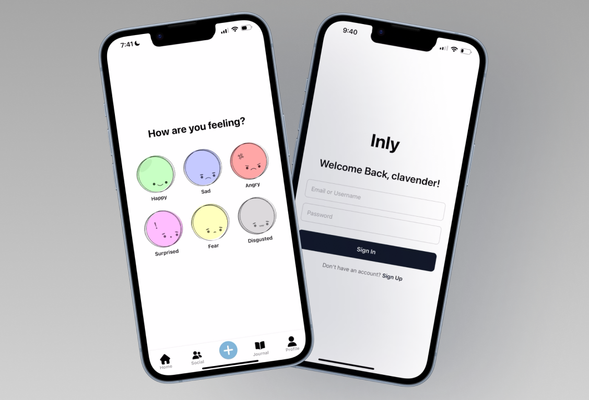

Turning inward in a
distracted world

Overview
Inly is a mood-tracking social application that asks users to turn inwards — promoting better emotional awareness in today's hyper-connected world.
Built with React Native, Inly allows users to document their emotional states through photos, captions, and songs — then share them with friends on a social feed. The application combines personal journaling with social connectivity, creating a supportive environment where emotional reflection feels natural rather than clinical.
Users choose from six core emotions, then add a photo, note, or song to express how they're feeling. This "mood note" is shared on a social feed where friends can see how you're doing and leave words of support.
Core emotions — happy, sad, angry, surprised, fear, disgusted — each with its own colour overlay and visual identity.
Platforms supported — fully cross-platform, built for both iOS and Android using React Native and Expo.
Background
The idea for Inly grew out of a frustration with existing emotional wellness apps — and a desire to merge social connection with genuine self-reflection.
Sabrina was inspired by Finch, a self-care application, but found the long setup process and goal configuration tedious. Inly was designed to let users re-center and reconnect with their inner lives without friction — no lengthy onboarding, no rigid routines.
The core question driving the project: can a social app actually help people feel more present, rather than more distracted?
Inly asks users to turn inwards — using social technology not as a tool for distraction, but as a mirror for emotional awareness. The social feed becomes a shared space for vulnerability, not performance.
Initial Design
The initial wireframes envisioned a simple four-screen flow: splash, authentication, emotion selection, and a social home feed. The mood calendar was conceived early on as a way for users to visualize their emotional patterns over time — seeing their feelings at a glance.
Features
Inly was built around a core user flow: check in, reflect, post, connect. Each feature was designed to make emotional reflection feel effortless.
Authentication System
A full sign-up and login flow built on Firebase Authentication. Users can sign in with either their email address or their username — a deliberate UX decision to make the app feel more personal. Behind the scenes, a two-step lookup resolves usernames to their linked email before authenticating with Firebase.
Secure Sign-Up
Username uniqueness checking, password confirmation, and minimum length validation — all backed by Firebase Authentication and Firestore user storage.
Welcome Back
AsyncStorage preserves the last logged-in username so returning users see a personalized greeting on the sign-in screen.
Mood Posts
Six emotions, each with a unique colour overlay. Users can attach a photo (camera or library), write a note, and search for a matching song via the Deezer API.
Mood Calendar
A monthly calendar view that maps daily mood entries to dates — letting users see their emotional patterns at a glance over time.
Social Feed
Real-time Firebase onSnapshot listeners keep the home feed updated. Posts display emotion overlays, profile photos, timestamps, captions, and songs.
Profile & Settings
Users can upload a profile photo, view their post count, and manage account settings including notifications and logout.
The Posting Flow
The posting experience is designed to feel lightweight and expressive. Users first select one of six emotions — unselected options desaturate, drawing focus to the chosen feeling. A conditional "Continue" button only appears after a selection is made, preventing empty submissions. From there, users add a photo, caption, and optional song before posting to the feed.
The Designs
Authentication Flow
The authentication screens keep things minimal — centered layout, clean inputs, and a single primary action per screen. The sign-in screen greets returning users by name, making the experience feel warm rather than transactional.
Emotion Selection & Mood Entry
The emotion selection screen presents six pastel-tinted character icons in a responsive grid. Selecting an emotion saturates it while desaturating the rest — a subtle but effective way of making the choice feel considered. The mood entry screen follows, where users compose their post with a photo, caption, and song.
Each emotion maps to a distinct colour overlay applied to the user's photo — so the home feed becomes a visual tapestry of how people are feeling, without a single word needed.
Home Feed
The home screen displays mood entries as square postcards, with the user's and friends' posts sorted in reverse chronological order. Each card shows the emotion-tinted photo, profile picture, username, timestamp, caption, and linked song. When a friend's image can't render due to storage constraints, a gradient background maintains visual consistency.
Journal & Social Screens
The journal screen maps mood entries to a monthly calendar — each day's cell fills with the emotion colour of that day's post, giving users an immediate emotional overview of their month. The social screen manages the friends list with an add-friends modal that searches by username.
Challenges
Building Inly surfaced two significant technical challenges — one around security, one around data constraints — that pushed us to think more deeply about architecture and user privacy.
Challenge 1 — Username Authentication
Firebase Authentication natively supports email/password login only. But asking users to remember their email every time they open the app felt impersonal and at odds with Inly's tone. We wanted users to log in with their username — something more memorable and human.
Firebase's signInWithEmailAndPassword() requires an email address. There is no built-in method for username-based authentication, and no way to bypass this without coordinating across multiple Firebase services.
A two-step lookup: if the input doesn't contain an "@", we query Firestore for the user document matching that username, retrieve their linked email, then pass it to Firebase Auth. The user experiences a seamless single-step login.
Challenge 2 — Friend Privacy & Consent
During development, we discovered that our initial friends system allowed any user to add another person and immediately access their mood data — without the other person's knowledge or consent. This was a significant privacy concern for an app built around emotional vulnerability.
User A adds User B. User B's posts immediately appear on User A's feed. User B has no idea their emotional data is being accessed by a stranger.
A mutual consent friend request system: requests stored in a FriendRequests collection, displayed on the recipient's friends page, with accept/deny logic that conditionally grants feed access. Not fully implemented due to time constraints, but fully scoped.
Challenge 3 — Image Storage on Firebase Free Tier
Firebase's free tier imposes strict limits on data upload and download. Rather than uploading images to cloud storage, we stored local device URIs in Firestore. This works perfectly for the posting user — but when a friend retrieves that post, the local file path doesn't exist on their device, so the image fails to render.
When an image fails to load, the mood card falls back to a gradient background using the emotion's colour. The feed remains visually consistent, and the emotional context is preserved — even without the photo. Ideally, we would have explored cloud storage providers or image compression to solve this more robustly.
Reflection
Inly started as a question about whether technology could bring people closer to themselves — and ended as a working app that, imperfect as it is, actually tries to answer that question.
I wanted to create something that let users reconnect with their inner life without a tedious setup. The colour overlay on photos and the mood calendar were the design decisions I'm most proud of — they let users see their feelings at a glance, without needing to read a single word. Through Inly, I feel we met our main focus: an app that helps users re-center despite technology being part of the disconnection in today's world.
The biggest thing I learned was breaking down big ideas into manageable, sequenced pieces. With multiple interrelated screens, we had to think carefully about how each page affected the others. There were moments we had to step back and re-evaluate entirely — which taught me that iteration isn't a failure, it's the process. In the end, we translated our wireframes into screens quite accurately, and shipped a semi-working product we're genuinely proud of.
Key Takeaways
Plan for privacy early. The friend consent issue was only discovered mid-build. Thinking about data access and user consent at the wireframe stage would have saved significant rework.
Know your infrastructure limits. The Firebase free-tier image storage constraint was a known risk we underestimated. Scoping storage solutions earlier would have led to a more complete product.
Simplicity enables depth. The least complex interaction — selecting an emotion — became the most meaningful moment in the app. Restraint in design lets feeling come through.